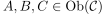
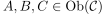
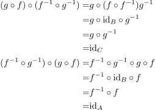

composition of isomorphisms as isomorphism
1. Proposition
Let  be a category and
be a category and  and
and  isomorphisms for 
Then
isomorphisms for 
Then  is a Isomorphism with inverse morphism:
is a Isomorphism with inverse morphism:
 1
1
2. Proof
Using associaciativity of the composition and uniqueness of a two-sided inverse morphism we conclude:

2